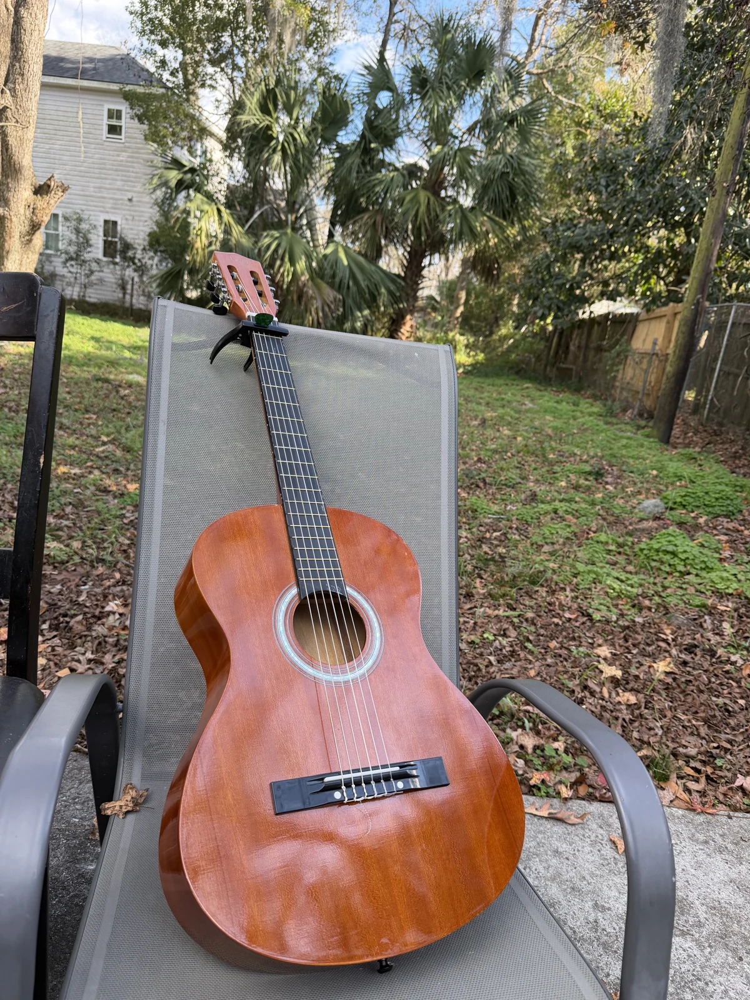
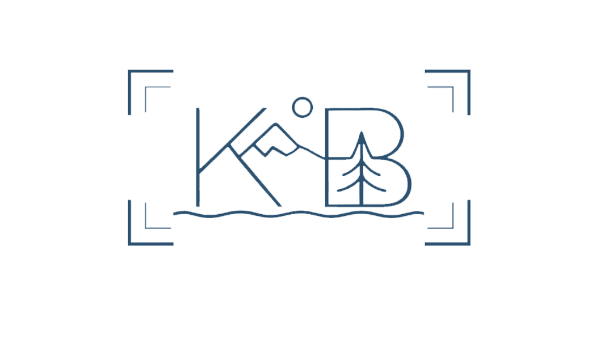

Scroll to follow ↓

About / six story pathsCurrent About ↗Six ways to follow your journey through photographs and milestones. Choose a path, then scroll: meet me → education → first studios → SCAD → where I am now. No character.

Your hobbies, travel photographs, learning highlights and favourite films would continue below the journey. These are layout explorations; your current About page stays intact.
Back to your portfolio ↗